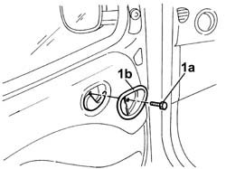
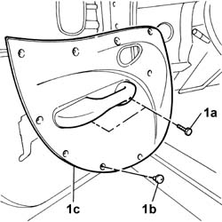
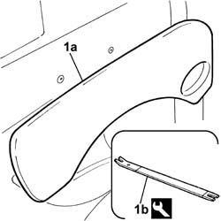
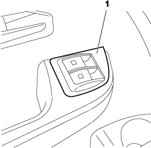
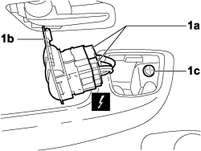
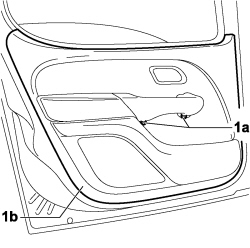

7005E10 front side door inner panel - r r for replacement
- Path
- Procedures > 70 FITTINGS > 7005 PASSENGER COMPARTMENT FRONT SIDE DOORS > 7005E front side door trim > 7005E10 front side door inner panel - r r for replacement
- Kind
- repair procedure (removal / refitting; the operation number is the code)
- Applies to
- all engines; all production periods
- Interactive page
- https://sloeber94.github.io/elrnDB-fDbl/en/#/2585010
Applies to: engines: 1.2 8v, 1.6 16v, 1.3 JTD 16V, 1.9 JTD 8V, 1.9 DIESEL; all production periods
 Removing
Removing
 Refitting
RefittingOp. 7005D38 FRONT SIDE DOOR MANUAL WINDOW MECHANISM HANDLE / RING NUT - R.R.
1. Undo the bolt (1a) and remove the door handle embellishment (1b).

Applies to: engines: 1.2 8v, 1.6 16v, 1.3 JTD 16V, 1.9 JTD 8V, 1.9 DIESEL; all production periods
1. Undo the fixing bolts (1a), remove the studs (1b) and then remove the door panel (1c).

Applies to: engines: 1.2 8v, 1.6 16v, 1.3 JTD 16V, 1.9 JTD 8V, 1.9 DIESEL; all production periods
Refitting
RemovingCheck that the retaining studs are not damaged.
If they are, replace any damaged studs.
Position the door panel and secure it with the studs and fixing bolts.
Fit the door handle embellishment and fix it with the bolt.
Op. 7005D38 FRONT SIDE DOOR MANUAL WINDOW MECHANISM HANDLE / RING NUT - R.R.
Applies to: engines: 1.2 8v, 1.6 16v, 1.3 JTD 16V, 1.9 JTD 8V, 1.9 DIESEL; all production periods; only with equipment: Electric front windows and Cargo trim level
Removing
Refitting1. Undo the bolt (1a) and remove the door handle embellishment (1b).
Applies to: engines: 1.2 8v, 1.6 16v, 1.3 JTD 16V, 1.9 JTD 8V, 1.9 DIESEL; all production periods; only with equipment: Electric front windows
1. Undo the bolts (1a), prise off the studs (1b) and then remove the door panel (1c).
Applies to: engines: 1.2 8v, 1.6 16v, 1.3 JTD 16V, 1.9 JTD 8V, 1.9 DIESEL; all production periods; only with equipment: Electric front windows and Doblò trim level
Op. 7005E38 FRONT SIDE DOOR INTERIOR HANDLE- R.R.
1. Undo the bolt (1a) and remove the door handle embellishment (1b).
Applies to: engines: 1.2 8v, 1.6 16v, 1.3 JTD 16V, 1.9 JTD 8V, 1.9 DIESEL; all production periods; only with equipment: Electric front windows
1. Carefully prise the panel (1a) off the studs, using the tool (1b).
 | Name | Country |
|---|---|---|
1b | Scraper blade | 1.878.077.000 |

Applies to: engines: 1.2 8v, 1.6 16v, 1.3 JTD 16V, 1.9 JTD 8V, 1.9 DIESEL; all production periods; only with equipment: Electric front windows and Cargo trim level
Refitting
RemovingCheck that the retaining studs are not damaged.
If they are, replace the damaged studs.
Position the door panel and fix it with the studs and bolts.
Fit the door handle embellishment and fix it with the bolt.
Applies to: engines: 1.2 8v, 1.6 16v, 1.3 JTD 16V, 1.9 JTD 8V, 1.9 DIESEL; all production periods; only with equipment: Electric front windows and Doblò trim level
Check that the panel fixing studs are not damaged.
Position the door panel, fitting the studs in their seatings.
Fit the door handle embellishment and fix it with the bolt.
Applies to: engines: 1.4 8v, 1.6 16v, 1.3 JTD 16V, 1.9 JTD 8V; production: da 12/03; only with equipment: MY 2005
Removing
Refitting- Turn the ignition key to the OFF position.
- Lift the bonnet
- Disconnect the negative battery terminal.
Description | Load proportioning valve | |
|---|---|---|
BATTERY |
Op. 7005R40 REAR VIEW MIRROR-S AND DOOR MIRROR-S POSITIONING SWITCH UNIT - R.R.
Op. 7005C44 TRIM FOR INTERIOR FRONT SIDE DOOR OPENING HANDLE (ONE), LEFT OR RIGHT - R.R.
1. Release the switch trim/support.

Applies to: engines: 1.4 8v, 1.6 16v, 1.3 JTD 16V, 1.9 JTD 8V; production: da 12/03; only with equipment: MY 2005
1. Disconnect the electrical connections (1a), remove the switch trim/support (1b) complete with switches from the vehicle and undo the fixing bolt (1c).
Description | Connector | |
|---|---|---|
1.a | ELECTRIC WINDOW CONTROLS ON DRIVER'S FRONT DOOR |

Applies to: engines: 1.4 8v, 1.6 16v, 1.3 JTD 16V, 1.9 JTD 8V; production: da 12/03; only with equipment: MY 2005
1. Undo the fixing bolts (1a), release the front side door inner panel (1b) and remove it from the vehicle.

Applies to: engines: 1.4 8v, 1.6 16v, 1.3 JTD 16V, 1.9 JTD 8V; production: da 12/03; only with equipment: MY 2005
Refitting
Removing- Check the condition of the front side door inner panel.
- Place the front side door inner panel in position and secure it using the special retaining buttons.
- Tighten the fixing bolts under the grab handle.
- Tighten the fixing bolt in the switch housing.
- Connect the electrical connections to the switches.
Description | Connector | |
|---|---|---|
ELECTRIC WINDOW CONTROLS ON DRIVER'S FRONT DOOR |
- Fit the switch trim/support in its housing.
Op. 7005C44 TRIM FOR INTERIOR FRONT SIDE DOOR OPENING HANDLE (ONE), LEFT OR RIGHT - R.R.
Op. 7005R40 REAR VIEW MIRROR-S AND DOOR MIRROR-S POSITIONING SWITCH UNIT - R.R.
- Connect the negative battery terminal.
Description | Connector | |
|---|---|---|
BATTERY |
Topics linked from this page (6)
- 7005C44 interior handle panel - r r
- 7005D38 front side door manual window mechanism handle ring-nut - r r
- 7005E38 front side door interior handle-r r
- 7005R40 rear view mirror-s and door mirror-s positioning switch unit - r r
- A001 BATTERY
- H044 ELECTRIC WINDOW CONTROLS ON FRONT DRIVER'S DOOR
Topics that link to this page (9)
- S62 FRONT DOORS CREAKING
- 7005A05 front side door water guard protection r r or arrange
- 7005C53 interior opening handle - r r
- 7005D15 front side door descending window glass r r
- 7005D23 front side door descending window glass guide one r r
- 7005D35 front side door manual window glass r r
- 7005E38 front side door interior handle-r r
- 7005E39 grab-handle reinforcement - r r
- 7005M21 front side door electrically operated window - r r